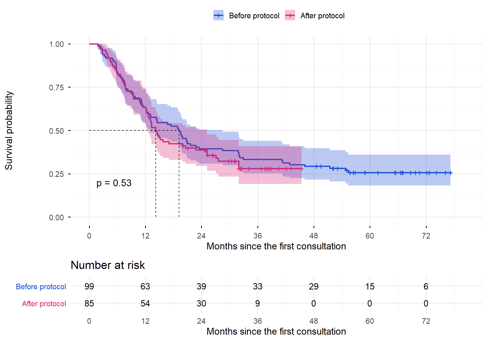
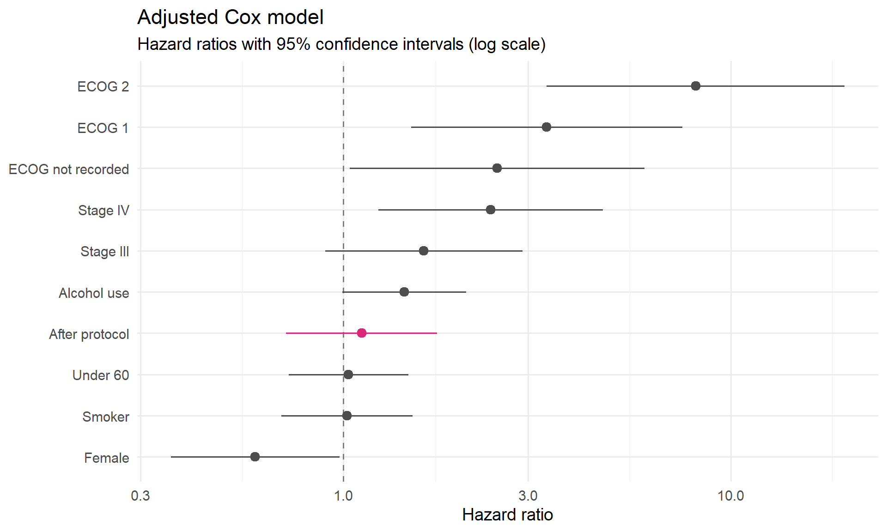
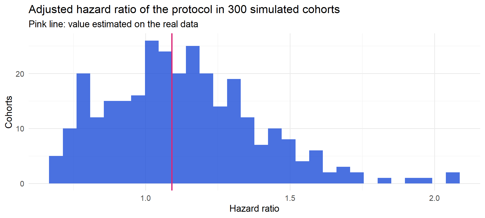

Esophageal Cancer Survival: did the new care protocol change anything?
Author
Hugo Batista da Silva
Note
Language: R (survival, survminer, flexsurv, data.table) · Type: statistical consulting for a medical residency final paper (Clinical Oncology) · Data: synthetic cohort generated from models fitted on the real data, see below
In August 2018 a cancer hospital in Vitória (ES, Brazil) introduced a new care protocol for esophageal cancer, designed mainly to shorten the time between the first consultation and the start of treatment. A Clinical Oncology resident wanted to evaluate it in her residency final paper, and I was hired for the statistical analysis.
The design is a retrospective cohort: patients with a first consultation before the protocol (2016 to July 2018) are compared with patients after it (August 2018 to 2020), and the outcome is the time from the first consultation until death by the disease or by the treatment.
The analysis follows three steps: compare the profile of the two groups, estimate the survival curves taking the censored patients into account, and estimate the effect of the protocol with a Cox model adjusted for the differences between the groups.
The dataset
The real data come from medical records and cannot be published, not even anonymised: with 184 patients from a single hospital, a combination of dates, age and stage could identify someone. So this page runs on a synthetic cohort with the same structure:
the covariates of each fictitious patient are drawn with the real proportions of their protocol group (this keeps the differences between the groups, which are the heart of the problem);
the survival times come from the adjusted Cox model fitted on the real data, using the baseline hazard of that same model (Breslow estimator), so the shape of the risk over time is also preserved; the follow-up is cut at the real end of data collection.
The generator script is available here. It runs on my machine, where the real data are, and exports only the fictitious cohort and aggregated results. At the end of the page, the synthetic results are compared with the real ones.
Variable
Description
protocolo
Pré Protocolo (before Aug 2018) or Pós Protocolo
consulta_1, data_obito
Date of the first consultation and of death (empty if alive)
obito, tempo_meses
Death indicator and follow-up time in months
estadiamento
Clinical stage II, III or IV
ecog_c
ECOG performance status 0, 1, 2 or not recorded
faixa_etaria, sexo
Age group (under / over 60) and sex
fumante, etilismo
Smoking and alcohol use
tempo_consulta_1_trat
Time between the first consultation and the treatment
tratamento
Bimodal or trimodal treatment
Profile of the two groups
Before comparing survival, it is necessary to know if the two groups are comparable.
The protocol achieved its main goal: the share of patients treated in less than one month is much higher after it. But the groups are not comparable: after the protocol there are many more patients in stage IV, the most advanced one, and fewer patients without a recorded ECOG. Any comparison of survival that ignores this mixes the effect of the protocol with the effect of a sicker population.
Survival curves
Not every patient had died when the data were collected. These patients are censored: we know they survived at least until the end of the follow-up, and this information must enter the analysis. Ignoring them, for example by calculating the time only from the date of death, would answer a different question (“among those who died, how long did it take?”) and would bias the comparison.
The censoring is especially important here because the two groups were followed for different lengths of time: patients after the protocol arrived later, so on the date the data were collected they had been followed for much less time. The reverse Kaplan-Meier (where the “event” is being censored) measures this:
Code
survfit(Surv(tempo_meses, 1- obito) ~ protocolo, data = coorte)
The Kaplan-Meier curves, with the patients still alive as censored observations at the end of the data collection:
Code
fit_correto <-survfit(Surv(tempo_meses, obito) ~ protocolo, data = coorte)lr_correto <-survdiff(Surv(tempo_meses, obito) ~ protocolo, data = coorte)ggsurvplot(fit_correto, data = coorte, risk.table =TRUE, pval =TRUE, conf.int =TRUE,surv.median.line ="hv", palette =c("#1d4ed8", "#db2777"),legend.labs =c("Before protocol", "After protocol"), legend.title ="",xlab ="Months since the first consultation", ylab ="Survival probability",break.time.by =12, ggtheme =theme_minimal(base_size =14))

The curves of the two periods are very close, and the log-rank test finds no difference (p = 0.53).
Adjusting for the differences between the groups
Comparing “before” and “after” with a log-rank test assumes that the groups differ only in the protocol, and we saw that this is false. The right tool is a Cox model adjusted for confounders. Choosing the adjustment variables is a decision about causality, not a statistical one:
flowchart LR
C["Confounders<br/><small>stage, ECOG, age, sex,<br/>smoking, alcohol</small>"] --> P["Protocol"]
C --> D["Death"]
P --> M["Mediators<br/><small>time to treatment,<br/>treatment type</small>"] --> D
P --> D
Confounders are characteristics of the patient at diagnosis that differ between the periods and also affect survival. They must enter the model.
Mediators are the way the protocol acts: it exists to shorten the time to treatment. Adjusting for them would remove exactly the effect we want to measure, so they stay out of the main model and are used only as a sensitivity analysis.
Code
cox_bruto <-coxph(Surv(tempo_meses, obito) ~ protocolo, data = coorte)cox_ajust <-coxph(Surv(tempo_meses, obito) ~ protocolo + estadiamento + ecog_c + faixa_etaria + sexo + fumante + etilismo, data = coorte)cox_mediadores <-update(cox_ajust, . ~ . + tempo_consulta_1_trat + tratamento)resumo <-function(m, nome) { s <-summary(m)$conf.intdata.table(Model = nome, HR = s[1, 1], `CI 95% lower`= s[1, 3], `CI 95% upper`= s[1, 4],p =summary(m)$coefficients[1, 5])}kable(rbind(resumo(cox_bruto, "Unadjusted"),resumo(cox_ajust, "Adjusted for confounders (main model)"),resumo(cox_mediadores, "Adjusted + mediators (sensitivity)")),digits =3, caption ="Hazard ratio of death, after vs before the protocol")
Hazard ratio of death, after vs before the protocol
Model
HR
CI 95% lower
CI 95% upper
p
Unadjusted
1.119
0.786
1.594
0.532
Adjusted for confounders (main model)
1.115
0.712
1.745
0.635
Adjusted + mediators (sensitivity)
1.206
0.683
2.131
0.519
Code
coefs <-as.data.table(summary(cox_ajust)$conf.int, keep.rownames ="termo")[, c(1, 2, 4, 5)]setnames(coefs, c("termo", "HR", "inf", "sup"))coefs[, termo :=gsub("protocolo|estadiamento|ecog_c|faixa_etaria|sexo", "", termo)]coefs[, termo :=fcase(termo =="Pós Protocolo", "After protocol", termo =="Nível III", "Stage III", termo =="Nível IV", "Stage IV", termo =="Nível 1", "ECOG 1", termo =="Nível 2", "ECOG 2", termo =="Not recorded", "ECOG not recorded", termo =="menos de 60 anos", "Under 60", termo =="Female", "Female", termo =="fumante", "Smoker", termo =="etilismo", "Alcohol use")]ggplot(coefs, aes(HR, reorder(termo, HR), colour = termo =="After protocol")) +geom_vline(xintercept =1, linetype ="dashed", colour ="grey50") +geom_pointrange(aes(xmin = inf, xmax = sup), size =0.6) +scale_x_log10() +scale_colour_manual(values =c("grey30", "#db2777"), guide ="none") +labs(title ="Adjusted Cox model", subtitle ="Hazard ratios with 95% confidence intervals (log scale)",x ="Hazard ratio", y =NULL) +theme_minimal(base_size =14)

After adjustment, the hazard ratio of the protocol is close to 1, with a confidence interval that includes both a benefit and a harm. What really drives survival is the condition of the patient: advanced stage and worse ECOG.
Checking the assumption of proportional hazards
The Cox model assumes that the ratio between the hazards of two groups is constant over time. The Schoenfeld residuals test this for each variable:
No variable rejects the hypothesis of proportional hazards at 5%, but in this synthetic cohort ECOG (p = 0.051) and the global test (p = 0.062) are close to the limit, so the plot of the residuals over time would deserve a look before trusting the model. In the real data the assumption holds comfortably (global p = 0.9).
Parametric models
The original work also compared parametric distributions for the survival time, which are useful to describe the hazard over time and to extrapolate. The AIC shows which one fits these data best:
The generalised gamma has the lowest AIC, followed by the log-normal, while the exponential and the Weibull are clearly worse. The generalised gamma contains the other distributions as special cases, which is why the original work compared them with likelihood-ratio tests. The result describes the shape of the risk: it rises in the first months after the diagnosis and then falls, a pattern common in advanced cancers, and one that the Weibull, whose hazard can only go up or only go down, cannot represent. The real data show the same ranking (the log-normal fits about 30 AIC points better than the Weibull).
How much can one cohort of 184 patients vary?
A synthetic cohort is one random draw. To know how much the result could change by chance alone, the generator simulated 300 cohorts from the same model, in which the true hazard ratio of the protocol is the one estimated on the real data (1.09). This page uses the most typical of them, the one whose estimated HR is closest to the median of the 300.
Code
ggplot(simulacoes, aes(hr)) +geom_histogram(bins =30, fill ="#1d4ed8", alpha =0.8) +geom_vline(xintercept = reais$cox_ajust[1, HR], colour ="#db2777", linewidth =1) +labs(title ="Adjusted hazard ratio of the protocol in 300 simulated cohorts",subtitle ="Pink line: value estimated on the real data", x ="Hazard ratio", y ="Cohorts") +theme_minimal(base_size =14)

The estimates go from about 0.77 to 1.6 (90% of the cohorts), and 9% of them would show a “significant” log-rank test just by chance, although the true effect is practically null. With small samples, a single p-value says little.
And in the real data?
The same analysis was run on the real patients, on my machine. Only aggregated results leave it:
Analysis of the protocol
Real data
Log-rank (n = 178)
p = 0.62
Unadjusted Cox
HR = 1.09 (0.77 to 1.55)
Cox adjusted for confounders
HR = 1.09 (0.72 to 1.66)
Proportional hazards (Schoenfeld, global)
p = 0.9
The synthetic cohort reproduces the real results closely: in both, there is no evidence that survival changed after the protocol once the profile of the patients is taken into account.
Conclusion
The protocol reached its main goal. Patients started treatment much faster: most of them in less than one month after the first consultation.
Survival did not change significantly. The adjusted hazard ratio is close to 1, with a confidence interval compatible with both a small benefit and a small harm.
The condition of the patient is what drives survival. Advanced stage and worse ECOG performance status are the strongest predictors of death.
A larger sample could go further. With 184 patients from a single hospital, small effects cannot be detected; a natural next question is whether time to treatment itself matters for survival.